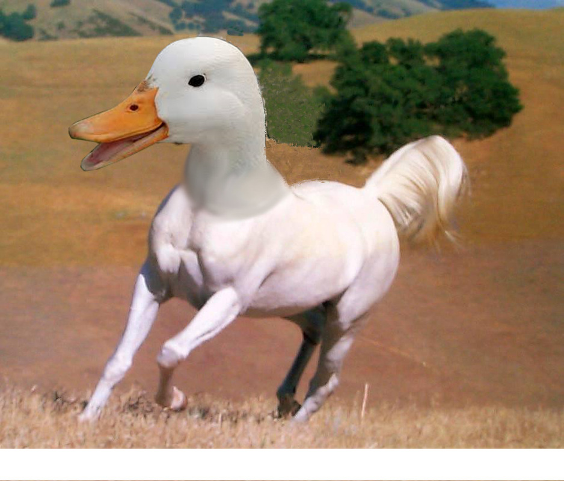

The Dorse
- History of the Dorse
- Dorse family tree
- Family pictures
History of the Dorse
The Dorse is a creature that came to life when the duck Bernardo and the horse Falimpa loved each other very much.
They finally felt like they could take a step forward in their relationship, so they wanted a child but there seemed to be one problem: Falimpa is a horse and Bernardo is a duck.
The magic of thier love mad it so it magicly worked, and a few months later, Falimpa laid a horse-shaped egg. After a few days, the egg cracked open, and the first magical, mythical Dorse was created.
It looked like a horse with a duck as its head.
Dorse family tree
Family pictures
Brick

Stone
Ronald (The ugly one)
SnoobyFlooby